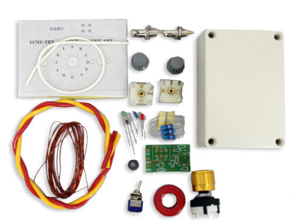
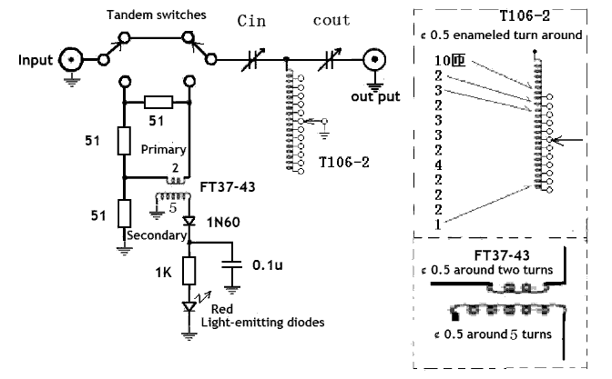

QRP Antenna Tuner
DIY kit from Aliexpress or Ebay
These kits are sold on Aliexpress and Ebay and at the time of wiring they are about $13 USD shipped.

Roots of this tuner can be traced to a QRP console designed by Doug DeMaw featured in the QST article: “A QRP Console” Doug DeMaw, QST, Sept. 1970, p. 23-25.
SWR indicator used in this tuner is based on Dan Tayloe design:
Tuner is using a hig-pass T-network to match low input impedance (Z) to a high output Z.
Detailed explanation of how T-network operates and the best practices of using such tuners covered in QST Jan 1995, Getting the Most Out of Your T-Network Antenna Tuner
Schematic

Build notes
Solder all components of the SWR bridge with the exception of LED. It’ll be easy to estimate require length of the terminals and how they should be bent right before installing the bridge in the enclosure.
FT37-43 - pay attention to the sides: IN 2 turns, OUT 5 turns. Some kits have this mislabeled on the PCB.

SWR bridge assembly.
Wind the toroid following M1KTA build notes and solder it on rotary switch following the schematic.
T106-2 winding. T106-2 winding. T106-2 winding. Rotary switch with toroid assembly. Rotary switch with toroid assembly.


Using supplied templates drill the holes in the enclosure. It might be hard to tell what template to use on what side of the enclosure.. Pay attention to the position of BNC connectors. Their central connector should be above the capacitors.
If you decide to remove the templates, they may leave the sticky residue on the enclosure that is hard to remove. You may use WD-40, baby oil or cooking oil and a piece of cloth to wipe it out.
Approximate distance between capacitors. Wiring capacitors. Capacitors installed. Capacitors installed, front side. Capacitors nobs assembly.


Install the SWR bridge and wire everything following the schematic diagram.
Capacitors and SWR bridge installed. SWR bridge wiring. Rotary switch and inductor installed and wired. Rotary switch and inductor installed and wired.


M1KTA Build Notes
M1KTA comments on the Chinese ATU
VK3YE Review and Build Tips
Review
W5CYF / TinkerJohn Build Videos
Operation
- Connect transceiver output to the left side BNC connector of the tuner.
- Connect antenna to the right side BNC connector of the tuner.
- Set the inductance switch to the first (A) position and both capacitors to the midscale.
- SWR bridge should be off (switch in a right position).
- Turn the inductance switch to the position where the noise is heard at its maximum.
- Turn on SWR bridge (switch in a left position).
- Send a series of dots and observe the LED. Bright LED - high SWR.
- Slowly tune right capacitor (antenna side) to get the minimum LED brightness.
- Slowly tune left capacitor (transceiver side) to get the minimum LED brightness.
- Dim LED is a very good SWR, even better is to tune until the LED goes out. You’ve achieved the lowest SWR for this frequency.
- Switch the SWR bridge out of the circuit (switch in a right position). Keeping the bridge in the circuit will reduce the power by 6dB.